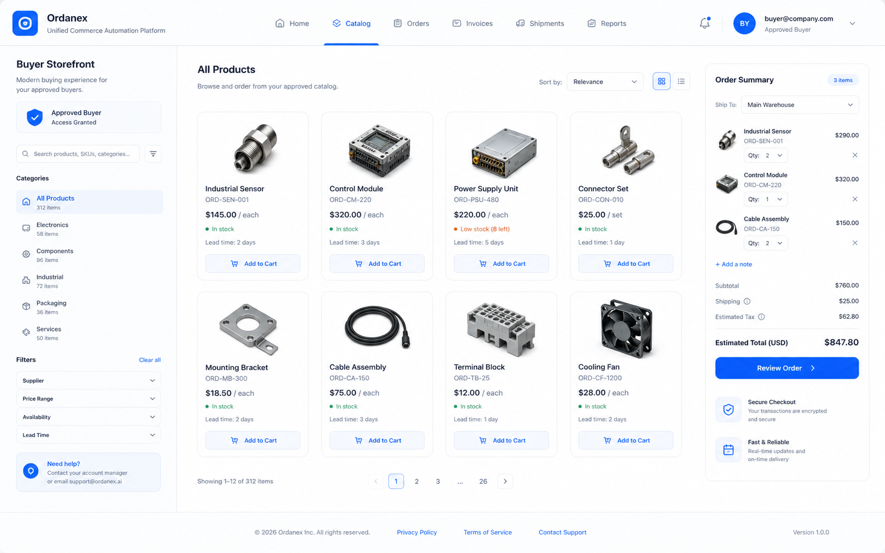
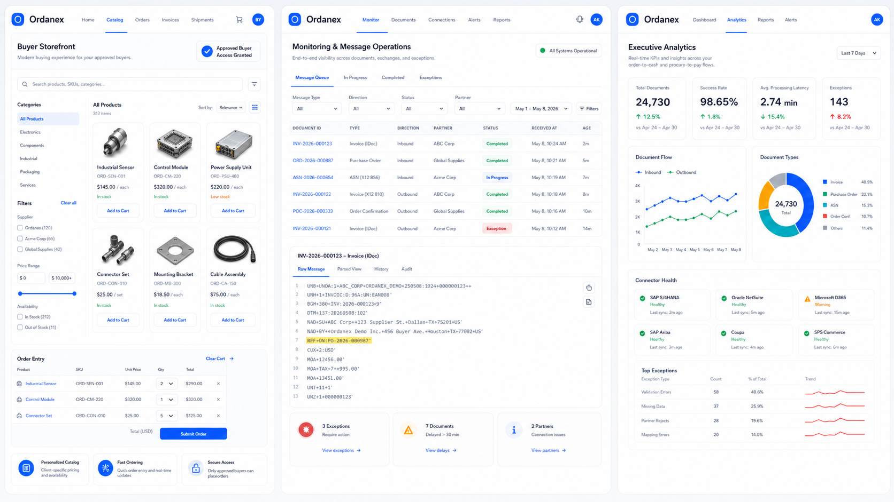
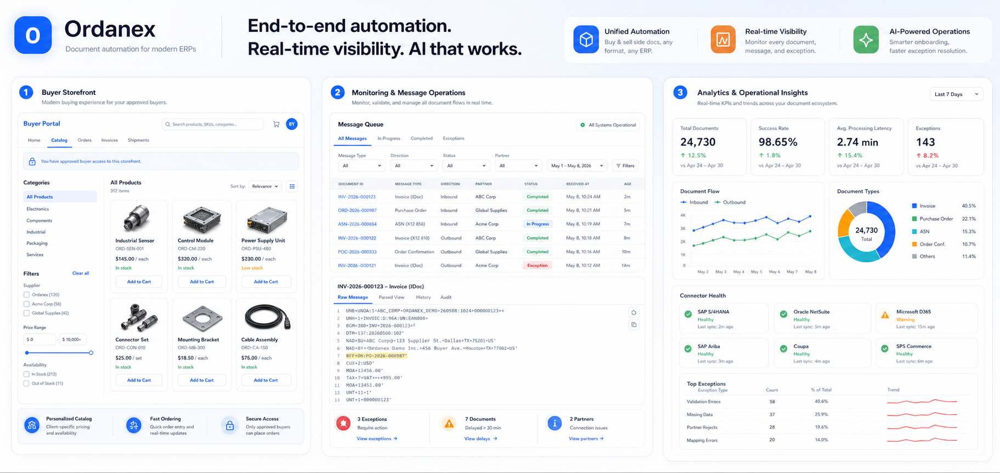

Touchless automation
Prebuilt connections
ERP-agnostic
Agentic AI onboarding
Unified commerce automation
Touchless order automation for buy side and sell side operations.
Ordanex gives operations, finance, and integration teams one place to manage touchless order automation, Accounts Payable invoices, Accounts Receivable invoices, order responses, order changes, and Advance Ship Notices with prebuilt connections for Ariba, Coupa, SPS Commerce, and other customer portals, plus native integrations with leading ERPs.
Built for enterprise teams
SAP, Oracle, D365, NetSuite, and partner ecosystems
Supported payloads
PDF, IDoc, XML, JSON, X12, EDIFACT, CSV, email, SFTP
Commercial model
Different access and subscription plans for every stage
Platform
Designed for the full document lifecycle.
From first message to final approval, Ordanex keeps every document traceable, validated, and routed to the right ERP target.
Sell Side Automation
Customer POs, order changes, order confirmations, ASN, and invoices with canonical mapping and partner-aware routing.
Accounts Payable and Accounts Receivable Invoices
Handle AP and AR invoices with intelligent parsing, field validation, and readable monitoring.
Buy Side Automation
Vendor POs, changes, confirmations, goods receipts, and AP invoices through a clean operational interface.
Integrations
Prebuilt connections for portals. Native integrations for leading ERPs.
Make the platform feel plug and play with ready-to-use integrations for the systems your customers already use.
Customer Portals
Prebuilt connections for Ariba, Coupa, SPS Commerce, and other customer portals to reduce onboarding friction.
Native ERP Integrations
Native integrations with leading ERPs including SAP, Oracle, Dynamics 365, and NetSuite for faster deployment.
Plug-and-Play Rollout
Use Agentic AI onboarding, templates, and validation rules to go live with less manual setup.
Process
Show the full document journey with a cinematic workflow view.
Switch between order-to-cash and requisition-to-pay to see how Ordanex captures, validates, routes, and updates the business in the source ERP.
Interactive walkthrough
Order to cash
Buyer to ERP
01
Capture
Order or requisition enters through email, portal, API, or EDI.
02
Validate
Rules, field accuracy, and approvals keep the flow clean.
03
Create
A clean downstream PO, sales order, or invoice is generated.
04
Respond
ERP status, confirmations, ASN, goods receipt, and invoice updates come back automatically.
Video preview
Watch the full order lifecycle move through Ordanex
Documents move from capture to matching to ERP handoff, with status updates coming back automatically.
01
Buyer order
Captured from the portal or inbox
02
Match & validate
Field mapping, totals, and routing checks
03
ERP update
Sales order, GR, ASN, and invoice status flow back
Buyer order intake
Browse products, submit the order, and create the business document automatically.
Exception-aware handling
Validation, approval, and auto-correction keep the transaction on track.
Downstream updates
Capture confirmations, ASN, goods receipts, and invoice events in the portal.
Media
Enterprise product media with one consistent Ordanex visual system.
A finished visual library that showcases the buyer storefront, monitoring, analytics, and workflow story in the same light-theme language as the application.
Customer-facing catalog, approved access, and order entry in one view.

Queue, viewer, validation, and status flow rendered as a clean operations panel.

Performance, health, and exception insight presented in a branded KPI story.

Services
Start fast with implementation help and ongoing support.
Implementation
- Discovery and mapping workshops
- Partner onboarding and validation rules
- ERP-specific document profiles
- Agentic AI onboarding for faster rollout
Managed Enablement
- Monitoring and exception handling
- Field accuracy tuning
- Release support and rollout planning
- Different access and subscription plan guidance
GUI Experience
Operator-friendly controls for auto-correction and manual correction.
The interface is built to help teams correct documents quickly with a mix of AI suggestions and guided human review.
Autocorrections
Automatically suggest fixes for field values, mappings, and document family classification before processing.
Drag and Drop
Move fields between sections, remap values visually, and place source snippets into the right target field.
Manual Correction
Review exceptions, override AI decisions, and save corrections so future documents get smarter.
Why Ordanex
Clear for operations. Flexible for integrations. Confident for finance.
Unified monitoring
See inbound and outbound document flow in one place.
Agentic AI onboarding
Reduce setup time while keeping review and validation in the loop.
Format-agnostic handling
Support for PDF, IDoc, XML, API, X12, EDIFACT, CSV, and email payloads.
Prebuilt integrations
Connect quickly with Ariba, Coupa, SPS Commerce, and leading ERPs.
Subscription plans
Different access tiers for startups, scaleups, and enterprise teams.
Plans
Different access and subscription plans for every stage.
Start with a lightweight access plan, move to guided onboarding, or choose premium onboarding-less activation when you are ready to go faster.
Starter
For teams validating a narrow message flow or launching a focused pilot.
Professional
For multi-format operations that need workflow support, visibility, and assisted onboarding.
Premium
For onboarding-less activation with Agentic AI-led setup and priority support.
Contact Ordanex
Tell us about your documents and we'll tailor the conversation.
Share your company details, ERP stack, and document types. We'll reach out to schedule a focused conversation.